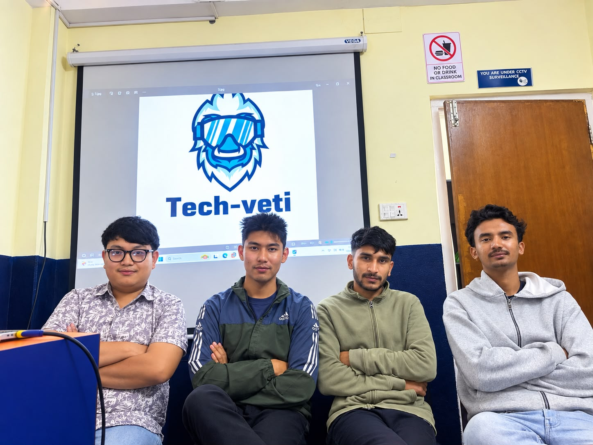

BP
Bipin Paija
Team Leader & Testing Lead
Leads sprint planning, system architecture, client communication, testing and deployment oversight.
LeadershipArchitectureTestingClient communication
Tech-Yeti Software Solutions is a four-person student-led software team built around complementary responsibilities: leadership, documentation, UI/UX and development/testing.
Hazard awareness, risk reduction and employee protection.
Open and modern technologies for interactive experiences.
Browser-based software designed around standard devices.
Strong standards in engineering, documentation and user experience.
A team photo from our project work, with each member contributing across planning, design, development, testing and documentation.

Rather than only listing names, Tech-Yeti gives each member a dedicated portfolio page showing what they owned and what project evidence demonstrates the work.
Leads sprint planning, system architecture, client communication, testing and deployment oversight.
Handles requirement finalisation, use-case specifications, test logs and documentation compilation.
Creates wireframes, mockups, 360° scene design and the visual direction for frontend UI.
Owns the frontend build, backend API, database schema and core system implementation.
Responsibilities are separated, but the delivery process is shared.
Clarify users, requirements, constraints and the client problem.
Convert requirements into user journeys, interfaces and implementation-ready structures.
Develop the application, backend services, data structures and interactive experiences.
Validate behaviour, document evidence, demonstrate the work and incorporate feedback.